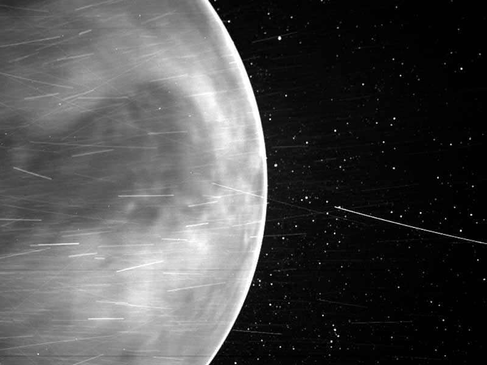

Venus is the second planet from the Sun and is Earth’s closest planetary neighbor. It’s one of the four inner, terrestrial (or rocky) planets, and it’s often called Earth’s twin because it’s similar in size and density. These are not identical twins, however – there are radical differences between the two worlds.
Venus has a thick, toxic atmosphere filled with carbon dioxide and it’s perpetually shrouded in thick, yellowish clouds of sulfuric acid that trap heat, causing a runaway greenhouse effect. It’s the hottest planet in our solar system, even though Mercury is closer to the Sun. Surface temperatures on Venus are about 900 degrees Fahrenheit (475 degrees Celsius) – hot enough to melt lead. The surface is a rusty color and it’s peppered with intensely crunched mountains and thousands of large volcanoes. Scientists think it’s possible some volcanoes are still active.
Venus has crushing air pressure at its surface – more than 90 times that of Earth – similar to the pressure you'd encounter a mile below the ocean on Earth. The same thing happens in reverse at sunset.
Another big difference from Earth – Venus rotates on its axis backward, compared to most of the other planets in the solar system. This means that, on Venus, the Sun rises in the west and sets in the east, opposite to what we experience on Earth. (It’s not the only planet in our solar system with such an oddball rotation – Uranus spins on its side.)
Venus was the first planet to be explored by a spacecraft – NASA’s Mariner 2 successfully flew by and scanned the cloud-covered world on Dec. 14, 1962. Since then, numerous spacecraft from the U.S. and other space agencies have explored Venus, including NASA’s Magellan, which mapped the planet's surface with radar. Soviet spacecraft made the most successful landings on the surface of Venus to date, but they didn’t survive long due to the extreme heat and crushing pressure. An American probe, one of NASA's Pioneer Venus Multiprobes, survived for about an hour after impacting the surface in 1978.
More recent Venus missions include ESA’s Venus Express (which orbited from 2006 until 2016) and Japan’s Akatsuki Venus Climate Orbiter (orbiting since 2016).
NASA’s Parker Solar Probe has made multiple flybys of Venus. On Feb. 9, 2022, NASA announced the spacecraft had captured its first visible light images of the surface of Venus from space during its February 2021 flyby.

It's a cloud-swaddled planet named for a love goddess, often called Earth’s twin. But pull up a bit closer, and Venus turns hellish. Our nearest planetary neighbor, the second planet from the Sun, has a surface hot enough to melt lead. The atmosphere is so thick that, from the surface, the Sun is just a smear of light.
In some ways it is more an opposite of Earth than a twin: Venus spins backward, has a day longer than its year, and lacks any semblance of seasons. It might once have been a habitable ocean world, like Earth, but that was at least a billion years ago. A runaway greenhouse effect turned all surface water into vapor, which then leaked slowly into space. The present-day surface of volcanic rock is blasted by high temperatures and pressures. Asked if the surface of Venus is likely to be life-bearing today, we can give a quick answer: a hard “no.”
Further, Venus may hold lessons about what it takes for life to get its start – on Earth, in our solar system, or across the galaxy. The ingredients are all there, or at least, they used to be. By studying why our neighbor world went in such a different direction with regard to habitability, we could find out what could make other worlds right. And while it might sound absurd, we can’t rule out life on Venus entirely. Temperature, air pressure, and chemistry are much more congenial up high, in those thick, yellow clouds.
Namesake
The ancient Romans could easily see seven bright objects in the sky: the Sun, the Moon, and the five brightest planets (Mercury, Venus, Mars, Jupiter, and Saturn). They named the objects after their most important gods. Venus, the third brightest object after the Sun and Moon, was named after the Roman goddess of love and beauty. It’s the only planet named after a female god.
Potential for Life
Thirty miles up (about 50 kilometers), temperatures range from 86 to 158 Fahrenheit (30 to 70 Celsius), a range that, even at its higher-end, could accommodate Earthly life, such as “extremophile” microbes. And atmospheric pressure at that height is similar to what we find on Earth’s surface.
At the tops of Venus’ clouds, whipped around the planet by winds measured as high as 224 miles (360 kilometers) per hour, we find another transformation. Persistent, dark streaks appear. Scientists are so far unable to explain why these streaks remain stubbornly intact, even amid hurricane-force winds. They also have the odd habit of absorbing ultraviolet radiation.
The most likely explanations focus on fine particles, ice crystals, or even a chemical compound called iron chloride. Although it's much less likely, another possibility considered by scientists who study astrobiology is that these streaks could be made up of microbial life, Venus-style. Astrobiologists note that ring-shaped linkages of sulfur atoms, known to exist in Venus’ atmosphere, could provide microbes with a kind of coating that would protect them from sulfuric acid. These handy chemical cloaks would also absorb potentially damaging ultraviolet light and re-radiate it as visible light.
Some of the Russian Venera probes did, indeed, detect particles in Venus’ lower atmosphere about a micron in length – roughly the same size as a bacterium on Earth.
None of these findings provide compelling evidence for the existence of life in Venus’ clouds. But the questions they raise, along with Venus’ vanished ocean, its violently volcanic surface, and its hellish history, make a compelling case for a return to our temperamental sister planet. There is much, it would seem, that she can teach us.
Size and Distance
Our nearness to Venus is a matter of perspective. The planet is nearly as big around as Earth – 7,521 miles (12,104 kilometers) across, versus 7,926 miles (12,756 kilometers) for Earth. From Earth, Venus is the brightest object in the night sky after our own Moon. The ancients, therefore, gave it great importance in their cultures, even thinking it was two objects: a morning star and an evening star. That’s where the trick of perspective comes in.
Because Venus’ orbit is closer to the Sun than ours, the two of them – from our viewpoint – never stray far from each other. The ancient Egyptians and Greeks saw Venus in two guises: first in one orbital position (seen in the morning), then another (your “evening” Venus), just at different times of the year.
At its nearest to Earth, Venus is some 38 million miles (about 61 million kilometers) distant. But most of the time the two planets are farther apart; Mercury, the innermost planet, actually spends more time in Earth’s proximity than Venus.
One more trick of perspective: how Venus looks through binoculars or a telescope. Keep watch over many months, and you’ll notice that Venus has phases, just like our Moon – full, half, quarter, etc. The complete cycle, however, new to full, takes 584 days, while our Moon takes just a month. And it was this perspective, the phases of Venus first observed by Galileo through his telescope, that provided the key scientific proof for the Copernican heliocentric nature of the Solar System.
Orbit and Rotation
Spending a day on Venus would be quite a disorienting experience – that is, if your ship or suit could protect you from temperatures in the range of 900 degrees Fahrenheit (475 Celsius). For one thing, your “day” would be 243 Earth days long – longer even than a Venus year (one trip around the Sun), which takes only 225 Earth days. For another, because of the planet's extremely slow rotation, sunrise to sunset would take 117 Earth days. And by the way, the Sun would rise in the west and set in the east, because Venus spins backward compared to Earth.
While you’re waiting, don’t expect any seasonal relief from the unrelenting temperatures. On Earth, with its spin axis tilted by about 23 degrees, we experience summer when our part of the planet (our hemisphere) receives the Sun’s rays more directly – a result of that tilt. In winter, the tilt means the rays are less direct. No such luck on Venus: Its very slight tilt is only three degrees, which is too little to produce noticeable seasons.
Moons
Venus has no moons.
Rings
Venus has no rings.
Formation
A critical question for scientists who search for life among the stars: How do habitable planets get their start? The close similarities of early Venus and Earth, and their very different fates, provide a kind of test case for scientists who study planet formation. Similar size, similar interior structure, both harboring oceans in their younger days. Yet one is now an inferno, while the other is the only known world – so far – to play host to abundant life. The factors that set these planets on almost opposite paths began, most likely, in the swirling disk of gas and dust from which they were born. Somehow, 4.6 billion years ago that disk around our Sun accreted, cooled, and settled into the planets we know today. Several might well have moved in closer, or farther out, as the solar system formed. Better knowledge of the formation history of Venus could help us better understand Earth’s – and those of rocky planets around other stars.
Structure
If we could slice Venus and Earth in half, pole to pole, and place them side by side, they would look remarkably similar. Each planet has an iron core enveloped by a hot-rock mantle; the thinnest of skins forms a rocky, exterior crust. On both planets, this thin skin changes form and sometimes erupts into volcanoes in response to the ebb and flow of heat and pressure deep beneath.
Other possible similarities will require further investigation – and perhaps another visit to a planet that has hosted many Earth probes, both in orbit and (briefly) on the surface. On Earth, the slow movement of continents over thousands and millions of years reshapes the surface, a process known as “plate tectonics.” Something similar might have happened on Venus early in its history. Today a key element of this process could be operating: subduction, or the sliding of one continental “plate” beneath another, which can also trigger volcanoes. Subduction is believed to be the first step in creating plate tectonics.
NASA’s Magellan spacecraft, which ended a five-year mission to Venus in 1994, mapped the broiling surface using radar. Magellan saw a land of extreme volcanism. The orbiter saw a relatively young surface, one recently reshaped (in geologic terms), and chains of towering mountains.
Surface
Venus is a landscape of valleys and high mountains dotted with thousands of volcanoes. Its surface features – most named for both real and mythical women – include Ishtar Terra, a rocky, highland area around the size of Australia near the north pole, and an even larger, South-America-sized region called Aphrodite Terra that stretches across the equator. One mountain reaches 36,000 feet (11 kilometers), higher than Mt. Everest. Notably, except for Earth, Venus has by far the fewest impact craters of any rocky planet, revealing a young surface.
On your tour of Venus, during the 117 days you’re waiting for sunset, you might stop by a volcanic crater, Sacajawea, named for Lewis and Clark’s Native American guide. Or stroll through a deep canyon, Diana, named for the Roman goddess of the hunt.
Atmosphere
The Soviet Union landed 10 probes on the surface of Venus, but even among the few that functioned after landing, the successes were short-lived – the longest survivor lasted two hours; the shortest, 23 minutes. Photos snapped before the landers fried show a barren, dim, and rocky landscape, and a sky that is likely some shade of sulfur yellow.
Venus’ atmosphere is one of extremes. With the hottest surface in the solar system, apart from the Sun itself, Venus is hotter even than the innermost planet, charbroiled Mercury. To outlive the short-lived Venera probes, your rambling sojourn on Venus would presumably include unimaginably strong insulation as temperatures push toward 900 degrees Fahrenheit (482 Celsius). You would need an extremely thick, pressurized outer shell to avoid being crushed by the weight of the atmosphere – which would press down on you as if you were 0.6 miles (1 kilometer) deep in the ocean.
The atmosphere is mostly carbon dioxide – the same gas driving the greenhouse effect on Venus and Earth – with clouds composed of sulfuric acid. And at the surface, the hot, high-pressure carbon dioxide behaves in a corrosive fashion. But a stranger transformation begins as you rise higher. Temperature and pressure begin to ease.
Magnetosphere
Even though Venus is similar in size to Earth and has a similar-sized iron core, the planet does not have its own internally generated magnetic field. Instead, Venus has what is known as an induced magnetic field. This weak magnetic field is created by the interaction of the Sun's magnetic field and the planet's outer atmosphere. Ultraviolet light from the Sun excites gases in Venus' outermost atmosphere; these electrically excited gases are called ions, and thus this region is called the ionosphere (Earth has an ionosphere as well). The solar wind – a million-mile-per-hour gale of electrically charged particles streaming continuously from the Sun – carries with it the Sun's magnetic field. When the Sun's magnetic field interacts with the electrically excited ionosphere of Venus, it creates or induces, a magnetic field there. This induced magnetic field envelops the planet and is shaped like an extended teardrop, or the tail of a comet, as the solar wind blows past Venus and outward into the solar system.